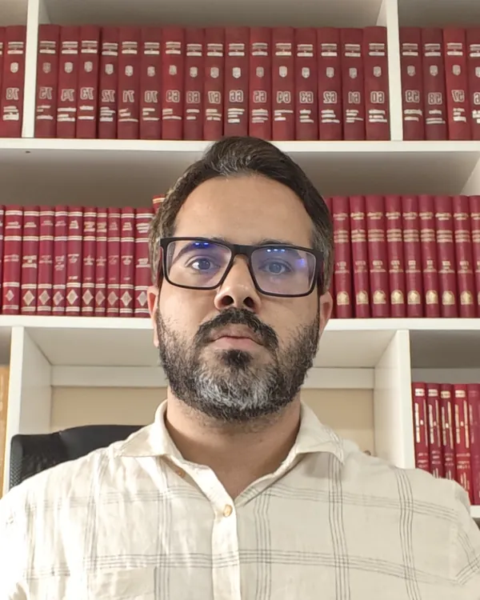

Medida protetiva · Lei Maria da Penha
Recebi uma medida protetiva: o que fazer após a intimação
Este conteúdo informativo explica o que é a medida protetiva de urgência (Lei 11.340/2006), quais condutas devem ser evitadas após a intimação e quais providências são recomendadas para o cumprimento da decisão.
- Atendimento feito pessoalmente pelo advogado
- Sigilo profissional sobre tudo o que você contar
- Atendimento online, de onde você estiver
Guia do Passageiro — voo cancelado, atrasado, mala extraviada
Está no aeroporto agora? Toque e veja o que fazer, o que guardar e quais são seus direitos.
Abrir o guia →A intimação
O que a decisão pode determinar
A decisão pode determinar, entre outras medidas, a proibição de aproximação e de contato com a pessoa protegida e o afastamento do lar.
Cada restrição deve ser cumprida nos termos em que foi fixada, desde a intimação.
Providências iniciais
- Guarde a decisão e anote o número do processo.
- Cumpra cada restrição fixada na decisão. Não procure a outra parte, nem por terceiros ou redes sociais.
- Reúna os documentos disponíveis: mensagens, datas, nomes de testemunhas.
- Busque orientação de advogado ou da Defensoria Pública para a análise do caso.
Dúvidas frequentes
Questões comuns após a intimação
- Como fica a convivência com os filhos?
- Como ficam a residência e os bens pessoais?
- Quais os reflexos no trabalho e na vida civil?
- O contato para explicar os fatos é permitido?
Não. O contato com a pessoa protegida pode configurar descumprimento da medida, conforme exposto adiante.
Orientação
Questões sobre filhos, residência e bens são tratadas no processo.
Pedidos de ajuste, como a regulamentação da convivência com os filhos ou a retirada de bens pessoais, devem ser formulados ao juízo pelos meios próprios.
A seguir, apresenta-se o que a lei prevê e as condutas recomendadas após a intimação.
Tradução jurídica
O que a lei diz, em português claro.
01 Entenda
O que é essa decisão
A medida protetiva é uma ordem judicial provisória. O juiz pode concedê-la logo no começo, com base no relato de quem pediu, antes de ouvir você (art. 19, §§ 1º e 4º, da Lei 11.340/2006). Ela não é uma condenação. Mas, a partir do momento em que você foi intimado, ela vale e precisa ser cumprida.
02 Primeiro, evite
O que não fazer
-
Não procure a pessoa protegida
Nem pessoalmente, nem por meio de amigos, parentes ou conhecidos. Pedir para alguém “levar um recado” ou “conversar por você” também pode ser visto como descumprimento.
-
Não mande mensagem nem ligue
Isso inclui WhatsApp, redes sociais, e-mail e ligação de outro número. Evite até curtidas e comentários. Um “só queria conversar” já é contato. Se ela procurar você, não responda antes de falar com seu advogado.
-
Não apague mensagens, fotos ou outras provas
Conversas, áudios, fotos e registros podem ser importantes para a sua defesa. Guarde tudo como está.
-
Cumpra a distância e cada proibição à risca
Se a decisão fixou 300 metros, são 300 metros. Se proibiu um lugar, não vá, nem “rapidinho”. Se mandou sair de casa, não volte para buscar coisas por conta própria: peça ao advogado que resolva isso pelo processo. Se houver tornozeleira, não retire nem mexa no aparelho.
Descumprir medida protetiva é crime: reclusão de 2 a 5 anos e multa (art. 24-A da Lei 11.340/2006), além do risco de prisão em flagrante ou preventiva. -
Não poste sobre o caso
Nada de indireta, desabafo ou “a minha versão” nas redes. Isso pode ser usado no processo e costuma piorar a situação.
-
Se a decisão mandar, entregue a arma
A suspensão da posse ou a restrição do porte de arma é uma das medidas que o juiz pode aplicar. Siga exatamente o que estiver escrito sobre entrega ou apreensão.
Art. 22, I, da Lei 11.340/2006.
03 Providências
O que fazer
-
Leia a decisão inteira e guarde a intimação
Veja quais medidas foram aplicadas, qual a distância, quem está protegido (às vezes inclui familiares e testemunhas) e se há algo sobre filhos, visitas ou pensão. Guarde o papel e tire uma foto.
-
Anote as datas
Dia e hora em que você foi intimado, data de audiência, se houver, e os fatos que levaram ao pedido, do jeito que você lembra. Escreva hoje, enquanto está fresco na memória.
-
Reúna provas e testemunhas
Conversas, áudios, fotos, comprovantes e o nome de quem presenciou os fatos. Salve em mais de um lugar, sem editar nada. Não procure pessoas que estejam incluídas na proibição de contato.
-
Busque orientação jurídica
A versão dos fatos é apresentada no processo, nos prazos e pelos meios próprios, com a assistência de advogado. Se você não tiver condições de contratar um advogado, procure a Defensoria Pública.
A medida pode ser contestada, revista ou revogada. A defesa pode apresentar a sua versão dos fatos, pedir ajuste de pontos específicos, como a convivência com os filhos, ou pedir a revogação quando não houver mais motivo para ela. A lei diz que a medida vale enquanto persistir o risco (art. 19, § 6º). Quem decide é o juiz, caso a caso, e ninguém pode garantir o resultado. Até uma nova decisão, a medida continua valendo.
A consequência
Descumprir medida protetiva é crime.
Reclusão de 2 a 5 anos e multa (art. 24-A da Lei 11.340/2006), além do risco de prisão em flagrante ou preventiva.
Por isso, qualquer forma de contato com a pessoa protegida, inclusive recado, mensagem ou ligação, pode caracterizar descumprimento.
O cumprimento integral da decisão, desde a intimação, é a conduta exigida até eventual revisão ou revogação pelo juiz.
04 A direção

Atendimento jurídico
Atendimento em Direito Penal e de Família, presencial em Imperatriz-MA e online em todo o Brasil, prestado pessoalmente pelo advogado Lucas Brito Ladeia.
Análise da decisão
Leitura completa da decisão e da intimação, explicando o que cada medida significa na prática.
O que não fazer
Orientação sobre as condutas a evitar para o cumprimento da medida.
Plano de defesa ou de revogação
Os próximos passos possíveis no seu caso, com exposição dos riscos e das possibilidades.
Sigilo
O que você contar fica protegido pelo sigilo profissional do advogado.
Modalidades
Presencial em Imperatriz-MA e online em todo o Brasil.
Cada caso é analisado individualmente. Não há garantia de resultado.
05 Triagem
Três perguntas para a triagem
As respostas não ficam salvas nesta página. Elas só vão na mensagem de WhatsApp, se você decidir enviar. Não precisa contar o caso por escrito.